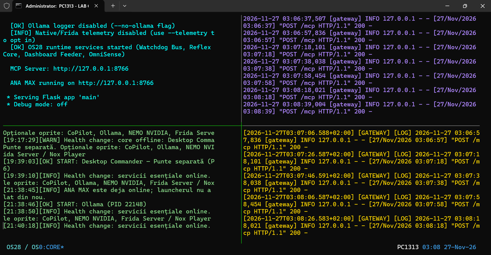
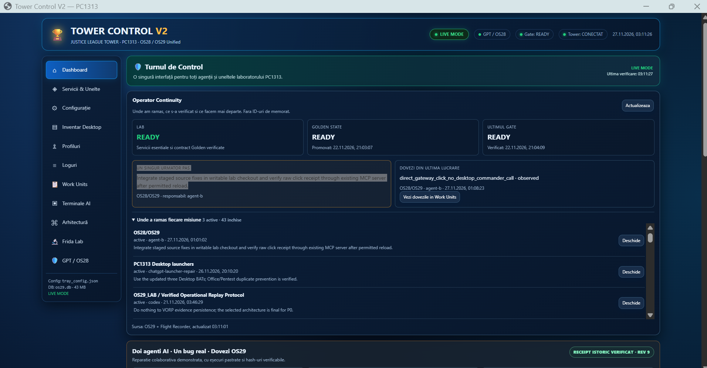
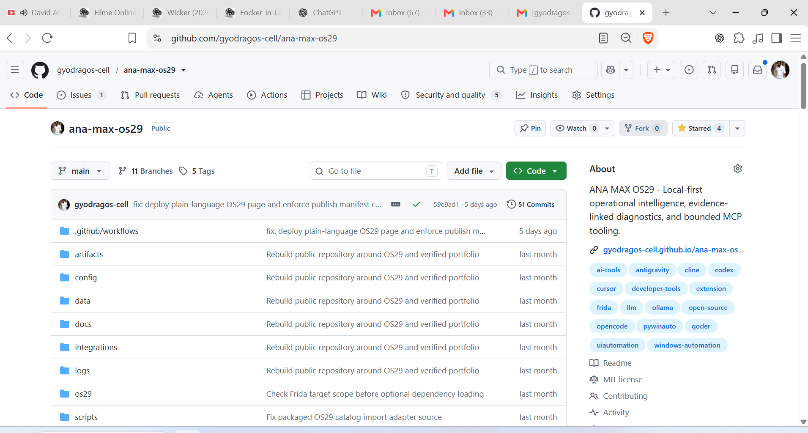
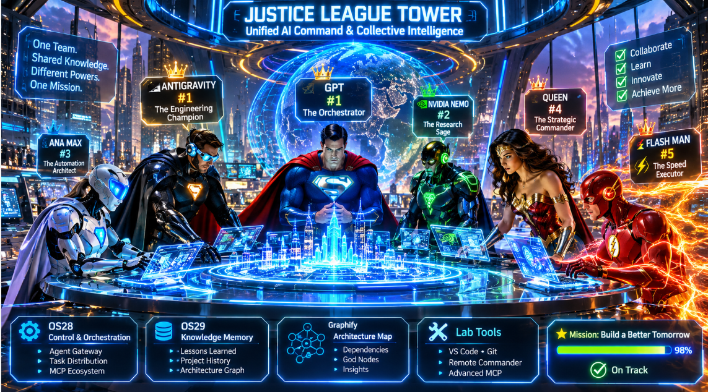

OS29 gives every AI agent a tamper-evident audit trail, crash-safe work units and sub-millisecond memory — all running on your machine, offline, with one pip install.
pip install os29-core
Not another model. Not cloud memory. A local SQLite-backed evidence store that survives crashes, restarts and handoffs.
Every WorkUnit and EvidenceReceipt is linked by SHA-256 into a verifiable chain. Run os29 verify <id> to confirm cryptographic integrity offline.
PRAGMA WAL mode, busy_timeout and foreign keys enabled by default. Full-text search with BM25 ranking at <0.1ms p99 — zero external dependencies.
State + evidence saved in a single atomic transaction. Survive os._exit(23) mid-write. 10 concurrent processes verified with no data loss or corruption.
Allowlist/denylist per tool, strict per-call timeouts, payload size limits and automatic secret redaction before any write to SQLite.
Lexical FTS5 baseline (zero deps) + optional vector scoring with row-wise L2 normalization. Guard against null/NaN/Inf vectors built-in.
os29 doctor checks DB integrity, WAL health and schema version. os29 bench runs the full reproducible benchmark locally in <30 seconds.
Real screenshots from PC1313 — OS29 running live with ANA MAX, 4-terminal workspace and Tower Control V2 dashboard.

ANA MAX agent running with OS29 memory backend. Four concurrent terminal panes: MCP STDIO listener, OS29 store writes, evidence verification and live log stream — all local, all offline.
SQLite WAL MCP STDIO Evidence Hashing
Multi-agent coordination panel. Work Units flowing through OS29: created → checkpoint → handoff → verified. The hash-chain audit trail visible in real time. Zero cloud calls.
Work Units Hash Chain Offline
OS29 exposes all tools over STDIO JSON-RPC — the standard MCP protocol. Any MCP-compatible client (Claude, Gemini, OpenAI tool calls) can connect without modification.
JSON-RPC 2.0 Schema Validated Policy GuardRun locally with python benchmarks/run_benchmark.py. Numbers below are real output from results.json. No synthetic inflation.
| Strategy | p50 (ms) | p95 (ms) | p99 (ms) | Recall@5 | MRR |
|---|---|---|---|---|---|
| Baseline 1 — Python dict + LIKE | 0.0924 | 0.0961 | 0.1377 | 70.0% | 0.3655 |
| Baseline 2 — Regex full-scan | 0.3905 | 0.7153 | 0.9636 | 70.0% | 0.3655 |
| OS29 FTS5/BM25 + WAL | 0.0613 | 0.0918 | 0.1973 | 70.0% | 0.3197 |
Source: benchmarks/results.json — deterministic, reproducible with python benchmarks/run_benchmark.py. FTS5 p50 is 33% faster than dict+LIKE baseline under identical load.
No API keys. No cloud account. No model download. Just Python 3.11+.
# 1. Clone and install git clone https://github.com/gyodragos-cell/ana-max-os29.git cd ana-max-os29 python -m venv .venv # Windows: .venv\Scripts\python -m pip install -e ".[test]" # Linux/macOS: .venv/bin/python -m pip install -e ".[test]" # 2. Run all tests (passes in <10 seconds) python -m pytest -q # 3. Try the CLI python -m os29.cli --help
os29_work_unit_create
os29_work_unit_checkpoint
os29_evidence_receipt_record
os29_work_unit_handoff
os29 verify <id>
# Full cycle (examples/01_quickstart_work_unit.py) from os29 import OS29Store store = OS29Store("demo.db") store.initialize() wu = store.create_work_unit( agent_id="agent-alpha", task_description="Analyze dependency vulnerability", ) store.checkpoint_work_unit(wu.id, "Scanning 142 packages...") store.record_evidence_receipt(wu.id, "No CVEs found in production deps") store.handoff_work_unit(wu.id, to_agent="agent-beta") # Cryptographic verification result = store.verify_work_unit(wu.id) print(result) # {"valid": true, "hash": "sha256:..."}
OS29 is a pure local layer. No network required. The agent decides what to store; OS29 guarantees it survives.
PRAGMA journal_mode=WAL + busy_timeout=10000ms + foreign_keys=ON. Multiple readers never block writers. Verified with 10 concurrent Python processes.
Every state transition writes state + evidence in one transaction. No orphaned state if the process dies mid-write.
JSON-RPC 2.0 over stdin/stdout. Schema-validated. Policy guard runs before every tool execution. No network socket needed.
OS29 was built for real multi-agent coordination — each specialist agent owns its evidence, hands off verified results.

DEMO SIMULATION — Agent team artwork
DEMO SIMULATION — OS29 Operator artwork
Coordination layer built on OS29. Routes work units between agents, tracks evidence chains, surfaces stalls and anomalies in real time — all local.
DEMO SIMULATION — Tower Control architecture visualization
AI agents crash. Context windows reset. Without OS29, the work unit is lost. With it, the agent resumes exactly where it stopped — hash verified.
Not a promise — a test. examples/02_crash_recovery_chaos.py spawns 5 real Python processes, each writing checkpoints, then kills them with os._exit(23). OS29 recovers every work unit.
python examples/02_crash_recovery_chaos.py # Spawning 5 processes... # All crashed. Verifying recovery... # All 5 work units recovered # Hash chain intact